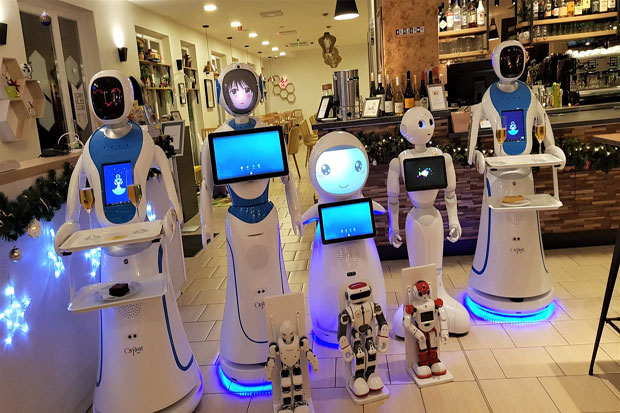
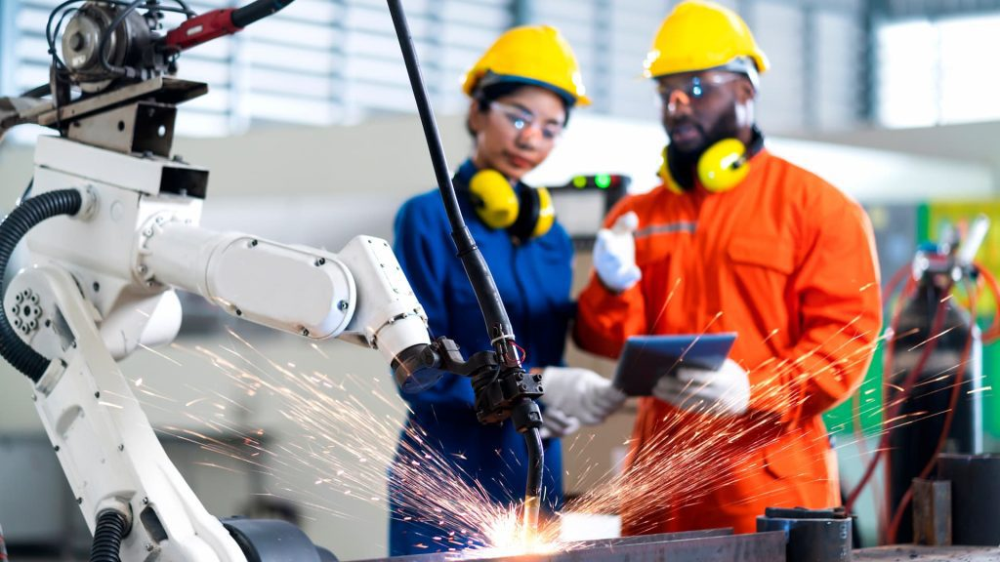

Revolusi industri 4.0 yang terjadi pada awal abad ke-21 merupakan sebuah revolusi dimana manusia telah menemukan pola baru dengan adanya kemajuan teknologi yang terjadi begitu cepat sehingga mengancam berbagai perusahaan yang lebih konvensional.
Berdasarkan pengalaman terdahulu, perkembangan industri yang ada sendiri telah memakan banyak korban yang membuat kemunduran berbagai sektor. Menurut Kanselir Jerman yaitu Angela Merkel pada tahun 2014 yang menyatakan arti dari revolusi industri 4.0 sebagai sebuah transformasi komprehensif dari segala aspek produksi yang terjadi di dunia industri melalui penggabungan antara teknologi digital serta internet dengan industri konvensional.
Selain itu, menurut Schlechtendahl dkk (2015) mendefinisikan revolusi industri yang menekankan pada unsur kecepatan dari ketersediaan sebuah informasi, yaitu sebuah lingkungan industri dimana seluruh entitasnya dapat selalu terhubung serta mampu berbagai informasi dengan mudah antara satu sama lain.
Dengan adanya revolusi industri 4.0 ini sendiri mengubah perspektif, dimana ukuran perusahaan bukan lagi menjadi sebuah jaminan, tetapi bagaimana sebuah perusahaan dapat beradaptasi dan memiliki kelincahan merupakan sebuah kunci keberhasilan untuk mencapai tujuan serta prestasi yang ada.
Berbagai teknologi baru yang tadinya tidak pernah terpikirkan pun bermunculan, seperti layanan ojek online, pembayaran melalui gadget, hingga warung digital yang bermunculan di tengah revolusi industri yang ada saat ini.
Jika kita melihat revolusi yang ada dalam skala industri, revolusi yang terjadi tersebut meningkatkan kemampuan software serta internet yang dapat membuat peningkatan efisiensi dalam sebuah perusahaan. Salah satu contohnya adalah penggunaan software untuk mengumpulkan data historis mesin yang dapat digunakan untuk mengatur maintenance bulanan secara otomatis.
Data yang ada tersebut nantinya akan diproses dan diolah untuk menghasilkan sebuah keputusan logis melalui algoritma yang ada. Selain itu, di Indonesia sendiri seperti yang diutarakan oleh Kementrian Perindustrian mengenai Makin Indonesia 4.0 sebagai salah satu strategi Indonesia dalam pengemplementasiannya serta memasuki revolusi industri 4.0.
Terdapat lima sektor industri yang akan difokuskan oleh pemerintah yang terdiri dari kimia, elektronik, garmen, otomotif, dan juga FMCG. Berdasarkan survei yang dilakukan oleh World Economic Forum dapat diketahui bahwa setidaknya ada empat teknologi yang mendominasi pada era ini di tahun 2018 hingga 2022 yang terdiri dari, high-speed mobile internet, AI atau artificial intelligence, cloud technology, serta big data analytics.
Revolusi industri keempat atau yang jug sering disingkat dengan RI 4.0 merupakan puncak dari revolusi industri dimana terlahirnya teknologi digital yang berdampat masif terhadap hidup manusia di seluruh dunia, seperti halnya yang dibahas pada buku Teknologi Informasi Dan Komputer Di Era Revolusi Industri 4.
Survei tersebut juga menunjukkan, bahwa 92% perusahaan yang ada di Indonesia akan mengimplementasikan penggunaan big data analytics ini sebagai salah satu bentuk teknologi utama di perusahaan.
Kemajuan ini dapat kita lihat melalui adanya kemunculan aplikasi Uber yang mengancam berbagai layanan jasa taksi konvensional, maupun Airbnb yang membuat banyak perusahaan di bidang industri pariwisata harus beradaptasi.
Pada era ini juga ditunjukkan, bahwa perusahaan yang ada tidak lagi bersaing atau fokus terhadap jumlah atau hasil produksi yang dibuat, namun persaingan ditunjukkan ke bagaimana setiap perusahaan mampu memberikan inovasi, pelayanan yang maksimal, serta kecepatan sebuah perusahaan dalam mengembangkan sebuah ide.
Dengan terus berkembangnya industri yang ada sendiri, kita dapat melihat pola yang terus muncul yaitu setiap orang terus menerus mencari cara termudah dan efisien dalam melakukan aktivitas. Namun, dengan adanya kemudahan tersebut juga menimbulkan berbagai konsekuensi karena pergerakannya yang sangat cepat. Jika sebuah perusahaan ingin bertahan pada kerasnya persaingan antar industri di revolusi industri 4.0 ini, alat atau mesin hanya dijadikan sebuah pemicu dan agen yang membawa perubahannya adalah tenaga kerja atau sumber daya manusia itu sendiri.
Pada era ini, setiap orang dituntut untuk memahami teknologi serta menggunakannya dan mengimplementasikannya ke kehidupan sehari-hari agar dapat bersaing dengan segala otomasi yang ada di era ini.